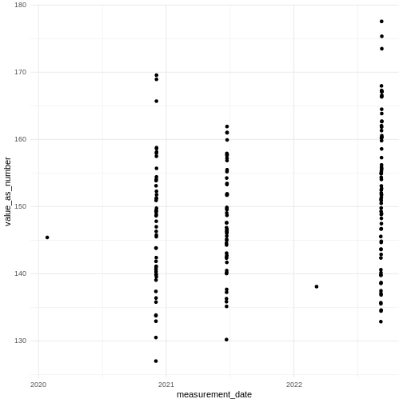
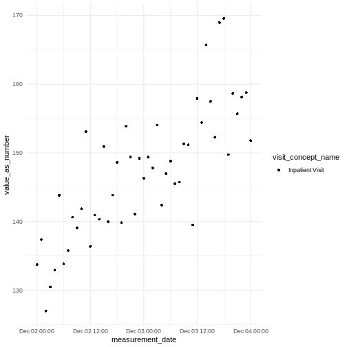
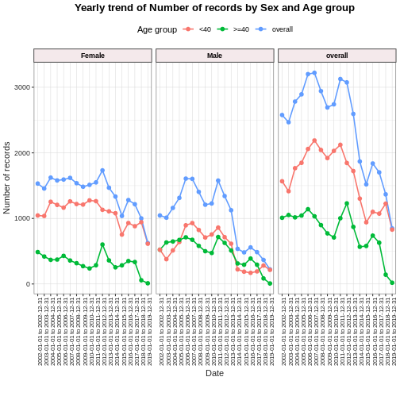
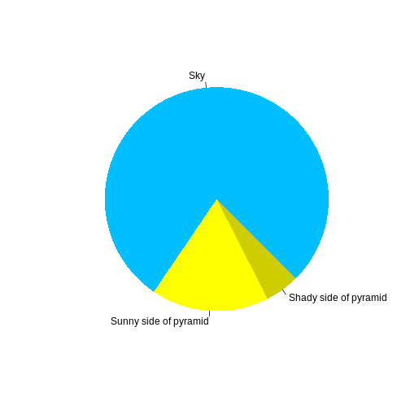

Content from What is OMOP?
Last updated on 2025-11-20 | Edit this page
Overview
Questions
- What is OMOP?
- What information would you expect to find in the person table?
- What information would you expect to find in the condition_occurrence table?
- How can you join these tables to aggregate information?
Objectives
- Examine the diagram of the OMOP tables and the data specification
- Interrogate the data in the tables
- Join these tables to find the concept names
Setting up R
Getting started
Since we want to import the files called *.csv into our
R environment, we need to be able to tell our computer where the file
is. To do this, we will create a “Project” with RStudio that contains
the data we want to work with. The “Projects” interface in RStudio not
only creates a working directory for you, but also remembers its
location (allowing you to quickly navigate to it). The interface also
(optionally) preserves custom settings and open files to make it easier
to resume work after a break.
Introduction
OMOP is a format for recording Electronic Healthcare Records. It allows you to follow a patient journey through a hospital by linking every aspect to a standard vocabulary thus enabling easy sharing of data between hospitals, trusts and even countries.
OMOP CDM Diagram

OMOP CDM stands for the Observational Medical Outcomes Partnership Common Data Model. You don’t really need to remember what OMOP stands for. Remembering that CDM stands for Common Data Model can help you remember that it is a data standard that can be applied to different data sources to create data in a Common (same) format. The table diagram will look confusing to start with but you can use data in the OMOP CDM without needing to understand (or populate) all 37 tables.
Test yourself
Look at the OMOP-CDM figure and answer the following questions:
- Which table is the key to all the other tables?
- Which table allows you to distinguish between different stays in hospital?
The Person table
The Visit_occurrence table
There are a handful of core tables and columns that contain key information about a patient’s journey in the hospital. These are 7 tables to get you started :
- person uniquely identifies each person or patient, and some demographic information. This is the central table that all other tables relate to.
- condition_occurrence records relating to a Person suggesting the presence of a medical condition.
- drug_exposure records about exposure of a patient to a drug.
- procedure_occurrence activities carried out by a healthcare provider on the patient with a diagnostic or therapeutic purpose.
- measurement numerical or categorical values obtained through standardized examination of a Person or Person’s sample.
- observation clinical facts about a Person obtained in the context of examination, questioning or a procedure.
- visit_occurrence records of times where Persons engage with the healthcare system.
Why use OMOP?

Once a database has been converted to the OMOP CDM, evidence can be generated using standardized analytics tools. This means that different tools can also be shared and reused. So using OMOP can help make your research FAIR.
Some simple tables
Loading Data
Now that we are set up with an Rstudio project, we are sure that the
data and scripts we are using are all in our working directory. The data
files should be located in the directory data, inside the
working directory. Now we can load the data into R, there are three data
files person.csv, condition_occurrence.csv and
drug_exposure.csv. Read each of these into a table with the
same name.
Read the Data
There are three data files person.csv,
condition_occurrence.csv and
drug_exposure.csv. Read each of these into a table with the
same name.
NOTE: The data does have headers.
R
person <- read.csv(file = "data/person.csv")
condition_occurrence <- read.csv(file = "data/condition_occurrence.csv")
drug_exposure <- read.csv(file = "data/drug_exposure.csv")
When you have read in the data, take some time to explore it.
Adding concept names
You will have noticed that content of the tables are not terribly easy to understand. This is because everything in OMOP is viewed as a concept that allows it to be related to one or more standard vocabularies such as SNOMED, ICD-10, etc.
We have developed a package that makes it very easy to add concept names to the tables.
You will need the function omopcept::omop_join_name_all(). This will look up the concept_id in the main table of concepts and add a column for the name of the concept associated with that id.
Who’s who?
By creating tables that also have the name of the concepts answer the following questions
- How old is the black gentleman?
- In which month was an unspecified fever prevalent in the hospital?
- What was the ethnicity of the patient not affected by this fever?
- Give a description of the patient who received Amoxicillin because they were wheezing?
R
library(omopcept)
person_named <- person |> omop_join_name_all()
OUTPUT
Warning: downloading a subset of omop vocab files, pre-processed.
If you want to make sure you have the vocabs you need, download from Athena, save locally & call `omop_vocabs_preprocess()`OUTPUT
downloading concept file, may take a few minutes, this only needs to be repeated if the package is re-installedR
condition_occurrence_named <- condition_occurrence |> omop_join_name_all()
drug_exposure_named <- drug_exposure |> omop_join_name_all()
- 25 (or 24 if he hasn’t had his birthday this year)
- July
- Don’t know - it hasn’t been specified
- A 53/54 white female
Joining and interrogating the tables
Using join
We established when looking at the diagram that the person table was the key to accessing all the other tables. In fact it is the person_id column that is the actual key that will allow us to join with other tables.
So we can join two of the tables together to get information about the different conditions suffered by each person.
I am going to use a left join because I want a record of every person and the conditions they may have.
R
library(dplyr)
person_condition <-
person_named |>
left_join(condition_occurrence_named, by = join_by(person_id) )
This produces a new table with all the column names from both tables and six rows.
Using count
Challenge
Count the number of people with each condition
R
person_condition |> count(gender_concept_name, condition_concept_name)
OUTPUT
# A tibble: 5 × 3
gender_concept_name condition_concept_name n
<chr> <chr> <int>
1 FEMALE Fever, unspecified 2
2 FEMALE Nausea and vomiting 1
3 FEMALE Wheezing 1
4 MALE Fever, unspecified 1
5 MALE Nausea and vomiting 1This produces a table:

For the Confident
Using the “GiBleed” database work out the number of male and female patients with each condition_concept_id
R
cdm$person |>
left_join( cdm$condition_occurrence, by = join_by(person_id) ) |>
group_by(condition_concept_id, gender_concept_id) |>
summarise(num_persons = n_distinct(person_id)) |>
collect() |>
ungroup() |>
omopcept::omop_join_name_all() |>
#remove some columns to make display clearer
select(-condition_concept_id, -gender_concept_id) |>
arrange(condition_concept_name)
OUTPUT
# A tibble: 158 × 3
condition_concept_name gender_concept_name num_persons
<chr> <chr> <dbl>
1 Acute allergic reaction FEMALE 59
2 Acute allergic reaction MALE 57
3 Acute bacterial sinusitis MALE 368
4 Acute bacterial sinusitis FEMALE 418
5 Acute bronchitis MALE 1243
6 Acute bronchitis FEMALE 1300
7 Acute cholecystitis MALE 6
8 Acute cholecystitis FEMALE 29
9 Acute viral pharyngitis FEMALE 1322
10 Acute viral pharyngitis MALE 1284
# ℹ 148 more rowsSolutions for working out Who’s who programmatically.
How old is the black gentleman?
R
library(dplyr)
year_of_birth <- person_named %>%
filter(grepl("black", race_concept_name, ignore.case = TRUE)) %>%
select(year_of_birth)
person_age <- year_of_birth$year_of_birth[1]
age = 2025 - person_age
print(age)
OUTPUT
[1] 25In which month was an unspecified fever prevalent in the hospital?
The lubridate package has a function
R
library(lubridate)
OUTPUT
Attaching package: 'lubridate'OUTPUT
The following objects are masked from 'package:base':
date, intersect, setdiff, unionR
month = month(ymd("2025-01-30"), label = TRUE)
print(month)
OUTPUT
[1] Jan
12 Levels: Jan < Feb < Mar < Apr < May < Jun < Jul < Aug < Sep < ... < Decwhich returns month = Jan
The dyplr package has a function that will allow you to add columns to a table
R
new_person_table = mutate(person, age = 2025-year_of_birth)
print(new_person_table)
OUTPUT
person_id year_of_birth gender_concept_id race_concept_id age
1 1 1980 8532 46285833 45
2 2 1971 8532 46286810 54
3 3 2000 8507 46285836 25
4 4 2010 8507 37394011 15which adds a column called age to the person table
R
library(dplyr)
library(lubridate)
fever_months <- condition_occurrence_named %>%
# Filter for rows where the condition name contains "fever"
filter(grepl("fever", condition_concept_name, ignore.case = TRUE)) %>%
# Extract month from the condition_start_date
mutate(month = month(condition_start_date, label = TRUE)) %>%
# Select just the month column for the results
select(month) %>%
# Count occurrences by month
group_by(month) %>%
summarise(count = n()) %>%
# Sort by count (descending)
arrange(desc(count))
# This gives us a table with the months where people had a fever and how many people had the fever each month. The question tells us that there is only one month so we select that.
fever <- fever_months$month[1]
# View the results
print(fever)
OUTPUT
[1] Jul
12 Levels: Jan < Feb < Mar < Apr < May < Jun < Jul < Aug < Sep < ... < DecWhat was the ethnicity of the patient not affected by this fever?
R
library(dplyr)
people_without_condition <- person_named %>%
# we want to join with the people who do not meet the condition
anti_join(condition_occurrence_named %>%
filter(grepl("fever", condition_concept_name, ignore.case = TRUE)),
by = "person_id")
ethnicity <- people_without_condition$race_concept_name
# View results
print(ethnicity)
OUTPUT
[1] "Ethnicity not stated"Give a description of the patient who received Amoxicillin because they were wheezing?
R
library(dplyr)
# Query to find persons prescribed amoxicillin for wheezing
amoxicillin_for_wheezing <- person_named %>%
# Join with condition_occurrence table
inner_join(condition_occurrence_named, by = "person_id") %>%
# Filter for wheezing condition
filter(grepl("wheez", condition_concept_name, ignore.case = TRUE)) %>%
# Join with drug_exposure table to find medications
inner_join(drug_exposure_named, by = "person_id") %>%
# Filter for amoxicillin prescriptions
filter(grepl("amoxicillin", drug_concept_name, ignore.case = TRUE))
# again the question implies there is only one person
age <- 2025-amoxicillin_for_wheezing$year_of_birth[1]
gender <- amoxicillin_for_wheezing$gender_concept_name[1]
ethnicity <- amoxicillin_for_wheezing$race_concept_name[1]
# View results
print(age)
OUTPUT
[1] 54R
print(gender)
OUTPUT
[1] "FEMALE"R
print(ethnicity)
OUTPUT
[1] "White: English or Welsh or Scottish or Northern Irish or British - England and Wales ethnic category 2011 census"- Using a standard makes it much easier to share data
- OMOP uses concepts to link dated to standard vocabularies
- R can be used to join and interrogate data
Content from concepts and conditions
Last updated on 2025-11-20 | Edit this page
Overview
Questions
- What is an OMOP concept ?
- Where are patient conditions stored in OMOP ?
Objectives
- Understand that nearly everything in a hospital can be represented by an OMOP concept_id.
- Know that OMOP data usually includes the OMOP concept table and other data from the vocabularies
- Be able to look up concepts by their name
- Know that patient conditions are stored in the condition_occurrence table
Introduction
Nearly everything in a hospital can be represented by an OMOP concept_id.
Any column within the OMOP CDM named *concept_id
contains OMOP concept IDs. An OMOP concept_id is a unique integer
identifier. Concept_ids are defined in the OMOP concept table where a
corresponding name and other attributes are stored. OMOP contains
concept_ids for other medical vocabularies such as SNOMED and LOINC,
which OMOP terms as source vocabularies.
| concept table columns | Description |
|---|---|
| concept_id | Unique identifier for the concept. |
| concept_name | Name or description of the concept. |
| domain_id | The domain to which the concept belongs (e.g. Condition, Drug). |
| vocabulary_id | The vocabulary from which the concept originates (e.g. SNOMED, RxNorm). |
| concept_class_id | Classification within the vocabulary (e.g. Clinical Finding, Ingredient). |
| standard_concept | ‘S’ for standard concepts that can be included in network studies |
| concept_code | Code used by the source vocabulary to identify the concept. |
| valid_start_date | Date the concept became valid in OMOP. |
| valid_end_date | Date the concept ceased to be valid. |
| invalid_reason | Reason for invalidation, if applicable |
Looking up OMOP concepts
OMOP concepts can be looked up in Athena an online tool provided by OHDSI.
The CDMConnector package allows connection to an OMOP Common Data Model in a database. It also contains synthetic example data that can be used to demonstrate querying the data.
In the previous lesson we set up the CDMConnector package to connect to an OMOP Common Data Model database and used it to look at the concepts table.
R
library(CDMConnector)
dbName <- "GiBleed"
CDMConnector::requireEunomia(datasetName = dbName)
OUTPUT
Download completed!R
db <- DBI::dbConnect(duckdb::duckdb(), dbdir = CDMConnector::eunomiaDir(datasetName = dbName))
cdm <- CDMConnector::cdmFromCon(con = db, cdmSchema = "main", writeSchema = "main")
The data themselves are not actually read into the created cdm object. Rather it is a reference that allows us to query the data from the database.
Typing cdm will give a summary of the tables in the
database and we can look at these individually using the $
operator.
R
cdm
R
cdm$person
OUTPUT
# Source: table<person> [?? x 18]
# Database: DuckDB 1.4.2 [unknown@Linux 6.8.0-1041-azure:R 4.5.2//tmp/RtmpqM9C9A/file2b2ee119870.duckdb]
person_id gender_concept_id year_of_birth month_of_birth day_of_birth
<int> <int> <int> <int> <int>
1 6 8532 1963 12 31
2 123 8507 1950 4 12
3 129 8507 1974 10 7
4 16 8532 1971 10 13
5 65 8532 1967 3 31
6 74 8532 1972 1 5
7 42 8532 1909 11 2
8 187 8507 1945 7 23
9 18 8532 1965 11 17
10 111 8532 1975 5 2
# ℹ more rows
# ℹ 13 more variables: birth_datetime <dttm>, race_concept_id <int>,
# ethnicity_concept_id <int>, location_id <int>, provider_id <int>,
# care_site_id <int>, person_source_value <chr>, gender_source_value <chr>,
# gender_source_concept_id <int>, race_source_value <chr>,
# race_source_concept_id <int>, ethnicity_source_value <chr>,
# ethnicity_source_concept_id <int>Many of the columns in the OMOP CDM tables contain concept_ids. For
example the condition_occurrence table contains a
condition_concept_id column that contains the concept_id
for the patient’s condition.
Challenge
Using the functions count, filter and select from the dplyr package find
How many concepts are included in this dataset?
What are the top 5 most common conditions in the
condition_occurrencetable.How many people were born after 1984?
How many distinct vocabularies are used in the concept table?
(Optional) Look up the concept_id for “Type 2 diabetes mellitus” in Athena. How many people in this dataset have this condition? ::::::::::::::::::::::::::::::::::::::::::::::::::: solution
R
library(dplyr)
# 1. How many concepts are included in this dataset?
cdm$concept %>%
summarise(n = n_distinct(concept_id))
OUTPUT
# Source: SQL [?? x 1]
# Database: DuckDB 1.4.2 [unknown@Linux 6.8.0-1041-azure:R 4.5.2//tmp/RtmpqM9C9A/file2b2ee119870.duckdb]
n
<dbl>
1 444Answer: There are 444 concepts in this dataset. Remember it is not the full set of OMOP concepts.
R
# 2. What are the top 5 most common conditions in the condition_occurrence table.
cdm$condition_occurrence %>%
dplyr::count(condition_concept_id, sort = TRUE) %>% # creates n
dplyr::mutate(rn = dplyr::row_number(dplyr::desc(n))) %>% # window fn
dplyr::filter(rn <= 5) %>%
dplyr::left_join(cdm$concept, by = c("condition_concept_id" = "concept_id")) %>%
dplyr::select(condition_concept_id, concept_name, n) %>%
dplyr::arrange(dplyr::desc(n))
OUTPUT
# Source: SQL [?? x 3]
# Database: DuckDB 1.4.2 [unknown@Linux 6.8.0-1041-azure:R 4.5.2//tmp/RtmpqM9C9A/file2b2ee119870.duckdb]
# Ordered by: dplyr::desc(n)
condition_concept_id concept_name n
<int> <chr> <dbl>
1 260139 Acute bronchitis 8184
2 40481087 Viral sinusitis 17268
3 372328 Otitis media 3605
4 4112343 Acute viral pharyngitis 10217
5 80180 Osteoarthritis 2694Answer: The top 5 most common conditions are:
| condition_concept_id | concept_name | n | |———————-|—————————–|——-| |
260139 | Acute bronchitis | 8184 | | 40481087 | Viral sinusitis | 17268
| | 372328 | Otitis media | 3605 | | 4112343 | Acute viral pharyngitis
|10217 | |80180 | Osteoarthritis | 2694 |
R
# 3. How many people were born after 1984?
cdm$person |>
dplyr::filter(year_of_birth > 1984) |>
dplyr::count()
OUTPUT
# Source: SQL [?? x 1]
# Database: DuckDB 1.4.2 [unknown@Linux 6.8.0-1041-azure:R 4.5.2//tmp/RtmpqM9C9A/file2b2ee119870.duckdb]
n
<dbl>
1 6Answer: There are 6 people born after 1984 in this dataset.
R
# 4. How many distinct vocabularies are used in the concept table?
cdm$vocabulary %>% summarise(n_distinct_vocabularies = n_distinct(vocabulary_id ))
OUTPUT
# Source: SQL [?? x 1]
# Database: DuckDB 1.4.2 [unknown@Linux 6.8.0-1041-azure:R 4.5.2//tmp/RtmpqM9C9A/file2b2ee119870.duckdb]
n_distinct_vocabularies
<dbl>
1 125Answer: There are 125 distinct vocabularies used in this dataset.
:::::::::::::::::::::::::::::::::::::::::::::::::::
- Understand that nearly everything in a hospital can be represented by an OMOP concept_id.
- Know that OMOP data usually includes the OMOP concept table and other data from the vocabularies
- Be able to look up concepts by their name
Content from measurements and observations
Last updated on 2025-11-20 | Edit this page
Overview
Questions
- How to access measurements and observations ?
Objectives
- know that measurements are mainly lab results and other records like pulse rate
- know observations are other facts obtained through questioning or direct observation
- understand concept ids identify the measure or observation, values are stored in value_as_number or value_as_concept_id
- be able to join to the concept table to find a particular measurement or observation concept by name
- understand that different clinical questions can be answered by querying by patient and/or visit, or summing across all records
Introduction
The OMOP measurement and observation tables contain information collected about a person. The difference between them is that measurement contains numerical or categorical values collected by a standardised process, whereas observation contains less standardised clinical facts. Measurements are predominately lab tests with a few exceptions, like blood pressure or function tests.
A person_id column means that there can be multiple
records per person.
Columns are similar between measurement and observation.
Concepts and values
Data are stored as questions and answers. A question
(e.g. Pulse rate) is defined by a concept_id and the answer
is stored in a value column.
measurement_concept_id or observation_concept_id columns define what has been recorded here are some examples :
| Example Measurement concepts | Example Observation concepts |
|---|---|
| Respiratory rate | Respiratory function |
| Pulse rate | Wound dressing observable |
| Hemoglobin saturation with oxygen | Mandatory breath rate |
| Body temperature | Body position for blood pressure measurement |
| Diastolic blood pressure | Alcohol intake - finding |
| Arterial oxygen saturation | Tobacco smoking behavior - finding |
| Body weight | Vomit appearance |
| Leukocytes [#/volume] in Blood | State of consciousness and awareness |
These value columns store values :
| column name | data type | example | concept_name |
|---|---|---|---|
| value_as_number | numeric value | 1.2 | - |
| unit_concept_id | units of the numeric value | 9529 | kilogram |
| value_as_concept_id | categorical value | 4328749 | High |
| operator_concept_id | optional operators | 4172704 | > |
Where values are a concept_id, the name of that concept can be looked up in the concept table that is part of the OMOP vocabularies and included in most CDM instances. We show this below.
Looking at numeric measurement values
R
install.packages("MeasurementDiagnostics")
library(dplyr)
cdm <- MeasurementDiagnostics::mockMeasurementDiagnostics()
# first we can see that some concepts have a value_as_number
freq_numeric <- cdm$measurement |>
filter(!is.na(value_as_number)) |>
count(measurement_concept_id, unit_concept_id) |>
# join concept names
left_join(select(cdm$concept, concept_id, concept_name), by=join_by(measurement_concept_id==concept_id)) |>
rename(measurement_concept_name=concept_name) |>
left_join(select(cdm$concept, concept_id, concept_name), by=join_by(unit_concept_id==concept_id)) |>
rename(unit_concept_name=concept_name) |>
collect()
freq_numeric |> head(3)
Output of numeric values
TODO these data from MeasurementDiagnostics aren’t great but they are a start
- Good that it is a complete CDM with the concept table for joining names.
- Bad few values and unrealistic units
OUTPUT
measurement_concept_id unit_concept_id n measurement_concept_name unit_concept_name
<int> <dbl> <dbl> <chr> <chr>
1 3002069 9529 50 Alkaline phosphatase.bone/Alkaline phosphatase.… kilogram
2 3012056 9529 50 Uroporphyrin 3 isomer [Moles/volume] in Urine kilogram
3 3026074 9529 50 Uroporphyrin 3 isomer [Moles/volume] in Stool kilogram
Challenge 1: Can you adapt the code above to output the frequency of categorical values ?
R
# other concepts have a value_as_concept_id
freq_categorical <- cdm$measurement |>
filter(!is.na(value_as_concept_id)) |>
count(measurement_concept_id, value_as_concept_id) |>
# join concept names
left_join(select(cdm$concept, concept_id, concept_name), by=join_by(measurement_concept_id==concept_id)) |>
rename(measurement_concept_name=concept_name) |>
left_join(select(cdm$concept, concept_id, concept_name), by=join_by(value_as_concept_id==concept_id)) |>
rename(value_as_concept_name=concept_name) |>
collect()
freq_categorical |> head(3)
OUTPUT
measurement_concept_id value_as_concept_id n measurement_concept_name value_as_concept_name
<int> <dbl> <dbl> <chr> <chr>
1 3001467 4328749 33 Alkaline phosphatase.bone [Enzymatic ac… High
2 3002069 4267416 33 Alkaline phosphatase.bone/Alkaline phos… Low
3 3011539 4267416 33 Uroporphyrin 3 isomer [Moles/volume] in… Low
When a measurement or observation was done
There are date and time columns indicating when a measurement or observation was performed.
A visit_occurrence_id specifies the visit that it occurred in.
TODO do we want to add more here with example data
Source data columns
There are columns that can store data from the source database that hasn’t been standardised to the same level. Usually it is not a good idea to use these in analyses because any code is unlikely to work on different data. The source columns can be used to check how the standardised data were arrived at.
Source columns in the measurement table :
measurement_source_value
measurement_source_concept_id
unit_source_value
value_source_value
Advanced : Linking measurement and observation tables to other tables e.g. specimen
There are measurement_event_id and observation_event_id columns that can link a record to the primary key in another table e.g. specimen_id. If these are used then meas_event_field_concept_id or obs_event_field_concept_id need to contain the concept_id corresponding to the linked table (in this case specimen).
For microbiology results observation_concept_id can store the genus & species of an organism & measurement_concept_id can store its growth.
TODO question in the above do they need to be linked by fact_relationship to deal with multiple organisms from the same specimen ? TODO do we want to add more here with example data
- know that measurements are mainly lab results and other records like pulse rate
- know observations are other facts obtained through questioning or direct observation
- understand concept ids identify the measure or observation, values are stored in value_as_number or value_as_concept_id
- be able to join to the concept table to find a particular measurement or observation concept by name
- understand that different clinical questions can be answered by querying by patient and/or visit, or summing across all records
Content from Visits
Last updated on 2025-11-20 | Edit this page
Overview
Questions
- What are visits and how can they be used ?
Objectives
- Know that a visit is a period of time and patients can have multiple visits
- Understand that multiple measurements, conditions etc. can occur within and between visits
- Understand that for some analyses you will want to look within visits and for other analyses to sum across visits
- Know that visits are recorded in the visit_occurrence table
- Know each visit is unique to a person
- Understand that other tables link to visits
- Understand how visits can be used to find co-occurrence of other events
Introduction
TODO not sure if this wants to be in a separate episode or a more general one about linking tables. It could always be renamed later.
The visit_occurrence table contains events
where Persons engage with the healthcare system for a duration of
time.
The main clinical tables condition_occurrence,
measurement, observation and
drug_exposure contain a visit_occurrence_id
that links to this table.
visit_concept_id specifies the kind of visit that took
place using standardised OMOP concepts. These include
Inpatient visit, Emergency Room Visit and
Outpatient Visit. Inpatient visits can last for longer than
one day.
The visit_detail table can contain information about
time periods shorter than the visit (for example transfer between wards)
but we will not cover that further here.
Generating some example data
Firstly here is some code (from ChatGPT) to create some interesting example data. TODO this code is lengthy, we may later want to hide it or save the output as .Rdata in the repo
R
#person, visit_occurrence, measurement, drug_exposure, condition_occurrence, and concept tables
#realistic blood pressure trends over time
#conditions and drugs co-occurring within visits
#concept table for joining concept names
# Install and load required packages
#install.packages(c("dplyr", "tibble", "lubridate", "uuid"), dependencies = TRUE)
library(dplyr)
library(tibble)
library(lubridate)
library(uuid)
library(tidyr)
set.seed(123)
# 1. Create 100 synthetic patients
n_patients <- 100
person <- tibble(
person_id = 1:n_patients,
gender_concept_id = sample(c(8507, 8532), n_patients, replace = TRUE), # Male / Female
year_of_birth = sample(1940:2000, n_patients, replace = TRUE)
)
# 2. Create multiple visits per patient
visits_per_person <- sample(2:5, n_patients, replace = TRUE)
visit_occurrence <- tibble(
person_id = rep(person$person_id, times = visits_per_person)
) |>
mutate(
visit_occurrence_id = row_number(),
visit_start_date = as_date("2020-01-01") + sample(0:1000, n(), replace = TRUE),
visit_concept_id = sample(c(9201, 9202, 9203), n(), replace = TRUE), # Inpatient, ER, Outpatient
#ER & outpatient just a day
visit_end_date = if_else( visit_concept_id == 9201,
visit_start_date + sample(1:3, n(), replace = TRUE),
visit_start_date),
)
# Baseline + slope per patient in one tibble
bp_params <- tibble(
person_id = 1:n_patients,
bp_slope = rnorm(n_patients, mean = 0, sd = 0.3), # mmHg per hour
systolic_base = rnorm(n_patients, mean = 120, sd = 10)
)
measurement <- visit_occurrence |>
left_join(bp_params, by = "person_id") |>
rowwise() |>
mutate(
n_hours = as.numeric(interval(visit_start_date, visit_end_date) / hours(1)),
hours_seq = list(visit_start_date + hours(0:n_hours))
) |>
ungroup() |>
select(person_id, visit_occurrence_id, bp_slope,
systolic_base, visit_start_date, hours_seq) |>
unnest(hours_seq) |>
mutate(
hours_since_start = as.numeric(difftime(hours_seq, visit_start_date, units = "hours")),
systolic = systolic_base +
(hours_since_start * bp_slope) + # per-hour slope
rnorm(n(), 0, 5), # noise
measurement_id = UUIDgenerate(n = n()),
measurement_concept_id = 3004249, # systolic
unit_concept_id = 8510, # mmHg
measurement_date = hours_seq
) |>
select(measurement_id, person_id, visit_occurrence_id,
measurement_date, measurement_concept_id,
systolic, unit_concept_id) |>
rename(value_as_number = systolic)
# 6. Define condition-drug co-occurrence map
condition_drug_map <- tribble(
~condition_concept_id, ~condition_name, ~drug_concept_id, ~drug_name,
201826, "Type 2 diabetes mellitus", 1124300, "Metformin",
320128, "Essential hypertension", 1112807, "Lisinopril",
319835, "Hyperlipidemia", 19019073, "Atorvastatin"
)
# 7. Generate conditions per visit
condition_occurrence <- visit_occurrence |>
rowwise() |>
do({
#n_conditions <- sample(1:2, 1)
#change n_conditions to 1 so that co-occurrence example works
n_conditions <- 1
selected_conditions <- condition_drug_map |>
slice_sample(n = n_conditions)
tibble(
condition_occurrence_id = UUIDgenerate(n_conditions),
person_id = .$person_id,
visit_occurrence_id = .$visit_occurrence_id,
condition_concept_id = selected_conditions$condition_concept_id,
condition_start_date = .$visit_start_date
)
}) |>
bind_rows()
# 8. Generate drug exposures that match conditions
drug_exposure <- condition_occurrence |>
left_join(condition_drug_map, by = "condition_concept_id") |>
group_by(person_id, visit_occurrence_id, drug_concept_id) |>
summarise(
drug_exposure_id = UUIDgenerate(1),
drug_exposure_start_date = min(condition_start_date),
.groups = "drop"
) |>
mutate(days_supply = sample(30:90, n(), replace = TRUE))
# 9. Build concept table (with all used concepts)
concept <- tribble(
~concept_id, ~concept_name,
3004249, "Systolic Blood Pressure",
3012888, "Diastolic Blood Pressure",
3027114, "Glucose",
3016502, "Creatinine",
1124300, "Metformin",
1112807, "Lisinopril",
19019073, "Atorvastatin",
201826, "Type 2 diabetes mellitus",
320128, "Essential hypertension",
319835, "Hyperlipidemia",
8510, "mm[Hg]",
8713, "mg/dL",
8840, "mmol/L",
9201, "Inpatient Visit",
9202, "Emergency Room Visit",
9203, "Outpatient Visit",
8507, "Male",
8532, "Female"
)
# 10. Combine into synthetic CDM object
cdm <- list(
person = person,
visit_occurrence = visit_occurrence,
measurement = measurement,
condition_occurrence = condition_occurrence,
drug_exposure = drug_exposure,
concept = concept
)
When do we need to consider visits ?
As we have seen we don’t need to consider visits to answer all questions. For example if we can count the number of patients with a particular condition without considering visits.
Using visits can help us with :
- different types of visits
- selecting data from an indivual or selected visits
- finding co-occurrence of events within a visit
We can query the visit_occurrence table to see what
kinds of visits there are in the data.
R
library(dplyr)
cdm$visit_occurrence |>
count(visit_concept_id) |>
left_join(cdm$concept |> select(concept_id, concept_name),
by = c("visit_concept_id" = "concept_id"))
OUTPUT
# A tibble: 3 × 3
visit_concept_id n concept_name
<dbl> <int> <chr>
1 9201 105 Inpatient Visit
2 9202 105 Emergency Room Visit
3 9203 125 Outpatient Visit R
cdm$visit_occurrence
OUTPUT
# A tibble: 335 × 5
person_id visit_occurrence_id visit_start_date visit_concept_id
<int> <int> <date> <dbl>
1 1 1 2020-12-02 9201
2 1 2 2022-03-07 9203
3 1 3 2020-01-26 9203
4 1 4 2021-06-22 9201
5 1 5 2022-09-07 9201
6 2 6 2021-06-02 9203
7 2 7 2022-08-13 9203
8 2 8 2022-01-26 9202
9 2 9 2021-10-27 9202
10 2 10 2021-07-06 9203
# ℹ 325 more rows
# ℹ 1 more variable: visit_end_date <date>Can you use person_id in the
visit_occurrence table to find patients with more than one
visit ?
R
visit_counts <- cdm$visit_occurrence |>
group_by(person_id) |>
summarise(n_visits = n()) |>
filter(n_visits > 1) |>
collect()
visit_counts |> head(4)
OUTPUT
# A tibble: 4 × 2
person_id n_visits
<int> <int>
1 1 5
2 2 5
3 3 3
4 4 4Now we can choose one of the patients from the previous table and look at all of their visits.
R
example_person_id <- visit_counts$person_id[1]
patient_visits <- cdm$visit_occurrence |>
filter(person_id == example_person_id) |>
left_join(cdm$concept, by = c("visit_concept_id" = "concept_id")) |>
select(
visit_occurrence_id, visit_start_date, visit_end_date, concept_name
) |>
arrange(visit_start_date) |>
collect()
patient_visits
OUTPUT
# A tibble: 5 × 4
visit_occurrence_id visit_start_date visit_end_date concept_name
<int> <date> <date> <chr>
1 3 2020-01-26 2020-01-26 Outpatient Visit
2 1 2020-12-02 2020-12-04 Inpatient Visit
3 4 2021-06-22 2021-06-24 Inpatient Visit
4 2 2022-03-07 2022-03-07 Outpatient Visit
5 5 2022-09-07 2022-09-10 Inpatient Visit Outpatient and Emergency Room Visits usually end on the same day, where Inpatient visits can last longer.
Here is how we can plot a measurement (in this case blood pressure)
over time for a patient. You may remember from a previous lesson that
numeric measurements are stored in the column
value_as_number.
First we filter the data.
R
# Define concept IDs
systolic_id <- 3004249
selected_patient <- 1
bp <- cdm$measurement |>
filter(person_id == selected_patient) |>
filter(measurement_concept_id %in% c(systolic_id))
head(bp,3)
OUTPUT
# A tibble: 3 × 7
measurement_id person_id visit_occurrence_id measurement_date
<chr> <int> <int> <dttm>
1 2b7e8db9-69e9-4620-a749-4d0… 1 1 2020-12-02 00:00:00
2 1134fe13-3e71-45dd-afd2-c0d… 1 1 2020-12-02 01:00:00
3 e5e5c988-3df6-415a-9503-8ae… 1 1 2020-12-02 02:00:00
# ℹ 3 more variables: measurement_concept_id <dbl>, value_as_number <dbl>,
# unit_concept_id <dbl>Then we can plot using ggplot2.
R
library(ggplot2)
ggplot(bp, aes(x = measurement_date,
y = value_as_number)) +
geom_point() +
theme_minimal()

You should be able to see some dates with single measurements and some with a few measurements very close to each other. Each separate group is a single visit.
Challenge
Can you modify the query and plot to show the type of visit ?
You can join to visit_occurrence to get visit_concept_id, and from
that join to the concept table to get concept_name. You can add
shape = to the aes() statement in the plot.
R
# Define concept IDs
systolic_id <- 3004249
selected_patient <- 1
bp2 <- cdm$measurement |>
filter(person_id == selected_patient) |>
filter(measurement_concept_id %in% c(systolic_id)) |>
left_join(cdm$visit_occurrence, by = c("visit_occurrence_id", "person_id")) |>
left_join(cdm$concept, by = join_by(visit_concept_id == concept_id)) |>
rename(visit_concept_name = concept_name)
ggplot(bp2, aes(x = measurement_date, y = value_as_number, shape = visit_concept_name)) +
geom_point() +
theme_minimal()

To indicate the type of visit we need to join to visit_occurrence to get the visit_concept_id and then join to the concept table to get a name for that concept.
Note that we join the visit_occurrence table to the measurement table
using both ("visit_occurrence_id", "person_id"). If we
didn’t include both, one of the columns would get duplicated and renamed
making it difficult to select later. Se with person_id
below.
R
cdm$measurement |>
left_join(cdm$visit_occurrence, by = c("visit_occurrence_id")) |>
names()
OUTPUT
[1] "measurement_id" "person_id.x" "visit_occurrence_id"
[4] "measurement_date" "measurement_concept_id" "value_as_number"
[7] "unit_concept_id" "person_id.y" "visit_start_date"
[10] "visit_concept_id" "visit_end_date" Challenge
Can you plot the measurements for one of the Inpatient visits ?
You can filter bp created in the previous challenge by one of the visit_occurrence_id from the table earlier.
R
bp3 <- bp2 |> filter( visit_occurrence_id == 1 )
ggplot(bp3, aes(x = measurement_date, y = value_as_number, shape = visit_concept_name)) +
geom_point() +
theme_minimal()

You should be able to see hourly blood pressure measurements within a visit.
Here is an example where the visit can make a difference to an analysis. Imagine we want to look at which drugs are associated with which conditions for patients.
If we were to join tables by person_id as we have seen
in previous exercises we could get conditions and drugs that were
separated by many years. Instead we can include
visit_occurrence_id in the join to get co-occurrence of
conditions and drugs in the same visit.
R
co_occurrence_by_visit <- cdm$condition_occurrence |>
# Join with drug_exposure on person and visit
inner_join(cdm$drug_exposure, by = c("person_id", "visit_occurrence_id")) |>
# Count how often each condition–drug pair co-occurs in a visit
group_by(condition_concept_id, drug_concept_id) |>
summarise(co_occurrences = n(), .groups = "drop") |>
# Join to get condition name
left_join(
cdm$concept |> select(concept_id, concept_name),
by = c("condition_concept_id" = "concept_id")
) |>
rename(condition_name = concept_name) |>
# Join to get drug name
left_join(
cdm$concept |> select(concept_id, concept_name),
by = c("drug_concept_id" = "concept_id")
) |>
rename(drug_name = concept_name) |>
select(condition_name, drug_name, co_occurrences)
co_occurrence_by_visit
OUTPUT
# A tibble: 3 × 3
condition_name drug_name co_occurrences
<chr> <chr> <int>
1 Type 2 diabetes mellitus Metformin 127
2 Hyperlipidemia Atorvastatin 95
3 Essential hypertension Lisinopril 113Here we see a perfect co-occurrence between conditions & expected drugs for treating that condition (because we generated the example data that way). If instead you didn’t use the visit_occurrence_id you would see more unexpected associations occurring across widely separated visits for the same patient.
Challenge
Can you repeat the query without using
visit_occurrence_id to see what results you get ?
R
co_occurrence <- cdm$condition_occurrence |>
# Join with drug_exposure on person
inner_join(cdm$drug_exposure, by = c("person_id")) |>
# Count how often each condition–drug pair co-occurs
group_by(condition_concept_id, drug_concept_id) |>
summarise(co_occurrences = n(), .groups = "drop") |>
# Join to get condition name
left_join(
cdm$concept |> select(concept_id, concept_name),
by = c("condition_concept_id" = "concept_id")
) |>
rename(condition_name = concept_name) |>
# Join to get drug name
left_join(
cdm$concept |> select(concept_id, concept_name),
by = c("drug_concept_id" = "concept_id")
) |>
rename(drug_name = concept_name) |>
select(condition_name, drug_name, co_occurrences)
co_occurrence
OUTPUT
# A tibble: 9 × 3
condition_name drug_name co_occurrences
<chr> <chr> <int>
1 Type 2 diabetes mellitus Lisinopril 116
2 Type 2 diabetes mellitus Metformin 257
3 Type 2 diabetes mellitus Atorvastatin 103
4 Hyperlipidemia Lisinopril 89
5 Hyperlipidemia Metformin 103
6 Hyperlipidemia Atorvastatin 179
7 Essential hypertension Lisinopril 205
8 Essential hypertension Metformin 116
9 Essential hypertension Atorvastatin 89Now we see that conditions co-occur with drugs unlikely to be used in their treatment because they came from visits further apart in time.
- Know that a visit is a period of time and patients can have multiple visits
- Understand that multiple measurements, conditions etc. can occur within and between visits
- Understand that for some analyses you will want to look within visits and for other analyses to sum across visits
- Know that visits are recorded in the visit_occurrence table
- Know each visit is unique to a person
- Understand that other tables link to visits
- Understand how visits can be used to find co-occurrence of other events
Content from Medications
Last updated on 2025-11-20 | Edit this page
Overview
Questions
- Where are medications stored ?
Objectives
- Know that exposure of a patient to medications is mainly stored in the drug_exposure table
- Understand that drug concepts can be at different levels of granularity
- Understand that source values are mapped to a standard vocabulary
Introduction
The OMOP drug_exposure table stores exposure of a patient to medications.
The main columns are :
| column name | content |
|---|---|
| drug_exposure_id | unique identifier given that person can get multiple exposures per visit |
| person_id | the patient |
| drug_concept_id | standard drug identifier, can be at different levels of granularity |
| drug_exposure_start_date | may also be an optional start_datetime |
| drug_exposure_end_date | may also be an optional end_datetime |
| drug_type_concept_id | where the record came from e.g. EHR administration record |
| drug_source_value | in UCLH the NHS dm+d Dictionary of Medicines and Devices ID |
| drug_source_concept_id | OMOP concept ID for the source value |
Drug data can be very complicated, as can the process of converting from the source data to OMOP. You may not find what you expect depending on this and the quality of the source data.
Drug concepts
The standard OHDSI drug vocabularies are called RxNorm
and RxNormExtension. RxNorm contains all drugs
currently on the US market. RxNormExtension is maintained
by the OHDSI community and contains all other drugs.
A particular concept_id can be at one of a number of different levels in a drug hierarchy. These are the main levels in RxNorm which are stored in concept_class_id in the concept table.
| RxNorm concept_class_id | Description |
|---|---|
| Ingredient | A base active drug ingredient, without strength or dose form (e.g., Ibuprofen). |
| Clinical Drug Component | A drug component with strength but no form (e.g., Ibuprofen 200 mg). |
| Clinical Drug | A combination of an ingredient, strength, and dose form (e.g., Ibuprofen 200 mg Oral Tablet). |
Drug mapping in the NHS
Drugs in the NHS are standardised to the NHS Dictionary of Medicines
and Devices (dm+d). dm+d is included in OMOP so there are values of OMOP
concept_id for each dm+d. However because dm+d is not a standard
vocabulary in OMOP it is translate once more to get to a standard OMOP
concept id in RxNorm or RxNormExtension that
can be used in collaborative studies. If there is a drug_concept_id
value of 0 and there are source codes this can be because that drug
doesn’t map to a standard ID. Reminder that the source values are stored
in these columns.
| column name | content |
|---|---|
| drug_source_value | in UCLH the NHS dm+d Dictionary of Medicines and Devices ID |
| drug_source_concept_id | OMOP concept ID for the source value |
TODO do we want to include about classifying medications by type ? It is not straightforward. I did something in omopcept but probably too tricky to include here.
R
# TODO later use the examples below or similar to create exercises
# OR do we want to make our own example data, e.g. including dm+d
# explore some drug_exposure data
library(CDMConnector)
library(DBI)
library(duckdb)
library(dplyr)
dbName <- "GiBleed" #smaller than other datasets quick to download
requireEunomia(datasetName = dbName)
con <- dbConnect(duckdb(), eunomiaDir(datasetName = dbName))
cdm <- cdmFromCon(con = con, cdmSchema = "main", writeSchema = "main", cdmName = dbName)
#67k records
#cdm$drug_exposure |> tally()
drugs_and_concept <- cdm$drug_exposure |>
left_join(cdm$concept, join_by(drug_concept_id==concept_id)) |>
collect()
drugs_and_concept |>
count(concept_class_id, sort=TRUE) |>
head(5)
# concept_class_id n
#1 Clinical Drug 36218
#2 CVX 25710
#3 Ingredient 2764
#4 Branded Pack 1640
#5 Quant Clinical Drug 1019
#note that CVX is an RxNorm id for vaccines
# top 5 clinical drugs
drugs_and_concept |>
filter(concept_class_id=="Clinical Drug") |>
count(drug_concept_id, concept_name, sort=TRUE) |>
head(5)
# drug_concept_id concept_name n
#1 1127433 Acetaminophen 325 MG Oral Tablet 9365
#2 19059056 Aspirin 81 MG Oral Tablet 4380
#3 1713671 Amoxicillin 250 MG / Clavulanate 125 MG Oral Tablet 3851
#4 1127078 Acetaminophen 160 MG Oral Tablet 2158
#5 40229134 Acetaminophen 21.7 MG/ML / Dextromethorphan Hydrobromide … 1993
# top 5 ingredients
# in this case probably drugs that couldn't be converted to a more granular level
drugs_and_concept |>
filter(concept_class_id=="Ingredient") |>
count(drug_concept_id, concept_name, sort=TRUE) |>
head(3)
# drug_concept_id concept_name n
#1 1118084 celecoxib 1844
#2 1124300 Diclofenac 850
#3 1367571 heparin 35
# TODO decide if we want to include drug quantity. Would need different example data.
# no drug quantity information in GiBleed
drugs_and_concept |> count(quantity, sort=TRUE)
# but there are plenty of days_supply
# oh dear, drug_strength has no rows so can't do the query below
# If you do have quantity data it can be converted to standard units using the
# drug_strength table that is part of the vocabularies.
# This will depend on the dose form which can be obtained from the relationship table.
# where the relationship_id is ‘Has dose form’.
# probably don't want to go into further here
# e.g. Tablets can be looked up
#"Acetaminophen 325 MG Oral Tablet" from above
cdm$drug_strength |> filter(drug_concept_id==1127433L) |>
#add name for the ingredient
left_join(select(cdm$concept,concept_id,concept_name), by=join_by(ingredient_concept_id==concept_id)) |>
rename(ingredient_concept_name=concept_name) |>
#add name for the amount unit
left_join(select(cdm$concept,concept_id,concept_name), by=join_by(amount_unit_concept_id==concept_id)) |>
rename(amount_unit_concept_name=concept_name) |>
select(drug_concept_id, ingredient_concept_name, amount_value, amount_unit_concept_name) |>
collect()
# to get all drugs containing a particular ingredient
# you can also use the drug_strength table
- Know that exposure of a patient to medications is mainly stored in the drug_exposure table
- Understand that drug concepts can be at different levels of granularity
- Understand that source values are mapped to a standard vocabulary
Content from Community provided software for working with OMOP data
Last updated on 2025-11-20 | Edit this page
Overview
Questions
- What are some of the R tools that can work on OMOP CDM instances ?
Objectives
- Brief outline of some R tools that will be useful for new OMOP users.
- Use Athena and other OHDSI tools for reference
- Describe the full landscape of OMOP tools and the community
Introduction
There are a range of community provided R tools that can help you work with instances of OMOP data.
We are going to show you a brief summary of some that are likely to be of use to new users.
With each you may need to balance the need to learn some new syntax with the benefits of the extra functionality that the package provides.
TODO maybe add a table with links to packages & brief descriptions.
OmopSketch To summarise an OMOP database.
CodelistGenerator To generate lists of OMOP concepts.
OmopSketch To summarise key information about an OMOP database. To provide a broad characterisation of the data and to allow users to evaluate whether they are suitable for particular research.
First we can install the package and its dependencies and connect to some mock data.
R
#without dependencies=TRUE it failed needing omock & VisOmopResults
#with dependencies it installed 91 packages in 1.8 minutes
install.packages("OmopSketch", dependencies=TRUE, quiet=TRUE)
library(dplyr)
library(OmopSketch)
# Connect to mock database
cdm <- mockOmopSketch()
summarise* and table* functions
The package has the following types of functions :
| function start | what it does |
|---|---|
| summarise* | generate results objects. |
| table* | convert results objects to tables for display. |
Snapshot
Snapshot creates a broad summary of the database including person count, temporal extent and other metadata.
R
summariseOmopSnapshot(cdm) |>
tableOmopSnapshot(type = "gt")
ERROR
Error in loadNamespace(j <- i[[1L]], c(lib.loc, .libPaths()), versionCheck = vI[[j]]): namespace 'xfun' 0.53 is already loaded, but >= 0.54 is requiredMissing data
Summarise missing data in each column of one or many cdm tables.
R
missingData <- summariseMissingData(cdm, c("drug_exposure"))
tableMissingData(missingData)
ERROR
Error in loadNamespace(j <- i[[1L]], c(lib.loc, .libPaths()), versionCheck = vI[[j]]): namespace 'xfun' 0.53 is already loaded, but >= 0.54 is requiredClinical Records
Allows you to summarise omop tables from a cdm. By default it gives measures including records per person, how many concepts are standard and source vocabularies.
R
summariseClinicalRecords(cdm, "condition_occurrence") |>
tableClinicalRecords(type = "gt")
ERROR
Error in loadNamespace(j <- i[[1L]], c(lib.loc, .libPaths()), versionCheck = vI[[j]]): namespace 'xfun' 0.53 is already loaded, but >= 0.54 is requiredYou can also
- apply to more than one table at a time
- reduce the measures of records per person
- reduce the number of rows by setting options to FALSE
- stratify by sex and/or age
- set a date range
R
summariseClinicalRecords(cdm, c("drug_exposure","measurement"),
recordsPerPerson = c("mean", "sd"),
inObservation = FALSE,
standardConcept = FALSE,
sourceVocabulary = FALSE,
domainId = FALSE,
typeConcept = FALSE,
sex = TRUE) |>
tableClinicalRecords(type = "gt")
ERROR
Error in loadNamespace(j <- i[[1L]], c(lib.loc, .libPaths()), versionCheck = vI[[j]]): namespace 'xfun' 0.53 is already loaded, but >= 0.54 is requiredRecord counts over time
You can plot the number of records over time for any cdm table also stratified by age and sex (so behind the scenes this will be joining clinical tables to the person table).
R
recordCount <- summariseRecordCount(cdm,
omopTableName = "drug_exposure",
interval = "years",
sex = TRUE,
ageGroup = list("<40" = c(0,39), ">=40" = c(40, Inf)),
dateRange = as.Date(c("2002-01-01", NA)))
plotRecordCount(recordCount, facet = "sex", colour = "age_group")

Concept Id counts
You can get a summary of the numbers of concept ids in a cdm table. Unfortuntaely the summary doesn’t display here but you can copy and paste the code into your console to see it.
R
result <- summariseConceptIdCounts(cdm = cdm, omopTableName = "condition_occurrence")
tableConceptIdCounts(head(result,5), display = "standard", type = "datatable")
- Brief outline of some R tools that will be useful for new OMOP users.
Content from Placeholder Chapter 8
Last updated on 2025-11-20 | Edit this page
Overview
Questions
- What
Objectives
- 1
Introduction
This is a lesson created via The Carpentries Workbench. It is written in Pandoc-flavored Markdown for static files and R Markdown for dynamic files that can render code into output. Please refer to the Introduction to The Carpentries Workbench for full documentation.
What you need to know is that there are three sections required for a valid Carpentries lesson template:
-
questionsare displayed at the beginning of the episode to prime the learner for the content. -
objectivesare the learning objectives for an episode displayed with the questions. -
keypointsare displayed at the end of the episode to reinforce the objectives.
Challenge 1: Can you do it?
What is the output of this command?
R
paste("This", "new", "lesson", "looks", "good")
OUTPUT
[1] "This new lesson looks good"Challenge 2: how do you nest solutions within challenge blocks?
You can add a line with at least three colons and a
solution tag.
Figures
You can also include figures generated from R Markdown:
R
pie(
c(Sky = 78, "Sunny side of pyramid" = 17, "Shady side of pyramid" = 5),
init.angle = 315,
col = c("deepskyblue", "yellow", "yellow3"),
border = FALSE
)

Or you can use standard markdown for static figures with the following syntax:
{alt='alt text for accessibility purposes'}
Callout sections can highlight information.
They are sometimes used to emphasise particularly important points but are also used in some lessons to present “asides”: content that is not central to the narrative of the lesson, e.g. by providing the answer to a commonly-asked question.
Math
One of our episodes contains \(\LaTeX\) equations when describing how to create dynamic reports with {knitr}, so we now use mathjax to describe this:
$\alpha = \dfrac{1}{(1 - \beta)^2}$ becomes: \(\alpha = \dfrac{1}{(1 - \beta)^2}\)
Cool, right?
- Use
.mdfiles for episodes when you want static content - Use
.Rmdfiles for episodes when you need to generate output - Run
sandpaper::check_lesson()to identify any issues with your lesson - Run
sandpaper::build_lesson()to preview your lesson locally